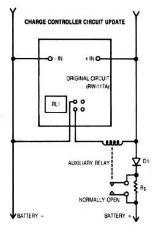

In MOTHER N0. 86, I told you how to build a battery-charge controller that can handle the output of one or two photovoltaic panels (up to five amps of current). Since that article appeared, a number of readers have written to ask if the circuit could somehow be modified to handle more amperage. The answer is yes! And here's how to do it.
Starting with the completed charge controller (as detailed in issue 86, but with R8 changed to 470 ohms), remove the jumper wires on the right side of the component side of the circuit board. This will free the relay (RL1) contacts from the current path, allowing the existing relay to be used to control a higher-rated relay. This new switching device must have a 12-volt coil and must be rated for the current your system will produce. (A hint: The series resistor-Rs-quenches the electric arc that limits the auxiliary relays, so the device you choose can be rated at 150% to A 10-amp relay can do 15-amp duty).
The value of Rs will also have to be adjusted to suit the size of your system. As a rule of thumb, Rs should limit trickle-charge rate to about 1% of battery capacity. For example, a 100-amphour, battery would get by with a 2-ohm, 2-watt. resistor, but a 500-amp-hour battery would need a 0.4-ohm, 10-watt resistor. In action, the diode D 1 will also have to be upgraded for higher current. Schottky diodes are the best for this application.
The original 5-amp charge controlled is perfectly suitable for small photovoltaic systems, and was specifically designed to use readily available components. The circuit, however, is applicable to much larger arrays, and if you're willing to seek out a relay and a diode with higher ratings it should handle the job competently reliably.
|
 |
|
|